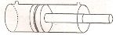
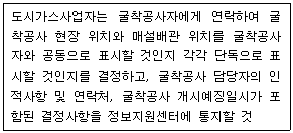
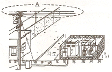

굴삭기운전기능사 (2011-07-31 기출문제)
1. 입력식 라디에이터 캡에 대한 설명으로 옳은 것은?
- 냉각장치 내부압력이 규정보다 낮을 때 공기밸브는 열린다.
- 냉각장치 내부압력이 규정보다 높을 때 진공밸브는 열린다.
- 냉각장치 내부압력이 부압이 되면 진공밸브는 열린다.
- 냉각장치 내부압력이 부압이 되면 공기밸브는 열린다.
(정답률: 52%)

2. 기관에서 피스톤의 행정이란?
- 피스톤의 길이
- 실린더 벽의 상하 길이
- 상사점과 하사점과의 총 면적
- 상사점과 하사점과의 거리
(정답률: 78%)
3. 건설기계운전 작업 후 탱크에 연료를 가득 채워주는 이유와 가장 관련이 적은 것은?
- 다음의 작업을 준비하기 위해서
- 연료의 기포방지를 위해서
- 연료탱크에 수분이 생기는 것을 방지하기 위해서
- 연료의 압력을 높이기 위해서
(정답률: 71%)
4. 기관 과열의 원인이 아닌 것은?
- 라디에이터 막힘
- 냉각장치 내부에 물때가 끼었을 때
- 냉각수의 부족
- 오일의 압력 과다
(정답률: 73%)
5. 기관에서 출력저하의 원인이 아닌 것은?
- 분사시기 늦음
- 배기계통 막힘
- 흡기계통 막힘
- 압력계 작동 이상
(정답률: 70%)
6. 엔진오일이 많이 소비되는 원인이 아닌 것은?
- 피스톤링의 마모가 심할 때
- 실린더의 마모가 심할 때
- 기관의 압축 압력이 높을 때
- 밸브가이드의 마모가 심할 때
(정답률: 72%)
7. 기관의 오일 압력이 낮은 경우와 관계없는 것은?
- 아래 크랭크 케이스에 오일이 적다.
- 크랭크축 오일 틈새가 크다.
- 오일펌프가 불량하다.
- 오일 릴리프밸브가 막혔다.
(정답률: 53%)
8. 디젤기관 연료장치의 분사펌프에서 프라이밍 펌프는 어느 때 사용하는가?
- 출력을 증가시키고자 할 때
- 연료계통에 공기를 배출 할 때
- 연료의 양을 가감할 때
- 연료의 분사압력을 측정할 때
(정답률: 53%)
9. 기관의 맥동적인 회전 관성력을 원활한 회전으로 바꾸어 주는 역할을 하는 것은
- 크랭크축
- 피스톤
- 플라이휠
- 커넥팅로드
(정답률: 51%)
10. 피스톤과 실린더 사이의 간극이 너무 클 때 일어나는 현상은?
- 엔진의 출력 증대
- 압축압력 증가
- 실린더 소결
- 엔진 오일의 소비증가
(정답률: 71%)
11. 건설기계 기관에서 사용되는 여과장치가 아닌 것은?
- 공기청정기
- 오일필터
- 오일 스트레이너
- 인젝션 타이머
(정답률: 84%)
12. 디젤엔진이 잘 시동 되지 않거나 시동이 되더라도 출력이 약한 원인으로 맞는 것은?
- 연료탱크 상부에 공기가 들어 있을 때
- 플라이휠이 마모되었을 때
- 연료분사펌프의 기능이 불량할 때
- 냉각수 온도가 100℃ 정도 되었을 때
(정답률: 63%)
13. 교류(AC)발전기에서 전류가 발생되는 곳은 어느 부분인가?
- 정류자
- 로터
- 전기자
- 스테이터
(정답률: 43%)
14. 실드빔식 전조등에 대한 설명으로 맞지 않는 것은?
- 대기조건에 따라 반사경이 흐려지지 않는다.
- 내부에 불활성 가스가 들어있다.
- 사용에 따른 광도의 변화가 적다.
- 필라멘트를 갈아 끼울 수 있다.
(정답률: 67%)
15. 퓨즈의 용량 표기가 맞는 것은?
- M
- A
- E
- V
(정답률: 71%)
16. 기동 전동기의 피니언이 링기어에 물리는 방식이 아닌 것은?
- 스팔라인식
- 벤딕스식
- 전기자 섭동식
- 피니언 섭동식
(정답률: 37%)
17. 축전지를 교환 및 장착할 때 연결 순서로 맞는 것은?
- (+)나 (-)선 중 편리한 것부터 연결하면 된다.
- 축전기의 (-)선을 먼저 부착하고, (+)선을 나중에 부착한다.
- 축전지의 (+), (-)선을 동시에 부착한다.
- 축전기의 (+)선을 먼저 부착하고, (-)선을 나중에 부착한다.
(정답률: 71%)
18. 납산용 일반축전지가 방전되었을 때 보충전시 주의하여야 할 사항으로 가장 거리가 먼 것은?
- 충전시 전해액 온도를 45℃ 이하로 유지할 것
- 충전시 가스발생이 되므로 화기에 주의할 것
- 충전시 벤트플러그를 모두 열 것
- 충전시 배터리 용량보다 높은 전압으로 충전 할 것
(정답률: 72%)
19. 로더의 작업 방법으로 맞는 것은?
- 굴삭 작업시는 버킷을 올려 세우고 작업을 하며 적재시는 전경각 35도를 유지해야 한다.
- 굴삭 작업 시는 버킷을 수평 또는 약 5도정도 앞으로 기울이는 것이 좋다.
- 작업시는 변속기의 단수를 높이면 작업 효율이 좋아진다.
- 단단한 땅을 굴삭시에는 그라인더로 버킷을 날카롭게 만든 후 작업을 하며 굴삭시에는 후 경각 45도를 유지해야 한다.
(정답률: 52%)
20. 트랙장치에서 유동륜의 작용은?
- 트랙의 회전을 원활히 한다.
- 동력을 트랙으로 전달한다.
- 트랙의 장력을 조정하면서 트랙의 진행방향을 유도한다.
- 차체의 파손을 방지하고 원활한 운전을 하게 한다.
(정답률: 58%)
21. 지게차의 마스트를 기울일 때 갑자기 시동이 정지되면 무슨 밸브가작동하여 그 상태를 유지하는가?
- 틸트록 밸브
- 스로틀 밸브
- 리프트 밸브
- 틸트 밸브
(정답률: 52%)
22. 기중기 작업에서 안전사항으로 적합한 것은?
- 측면으로 하며 비스듬히 끌어 올린다.
- 저속으로 천천히 감아올리고 와이어로프가 인장력을 받기 시작할 때는 빨리 당긴다.
- 지면과 약 30cm 떨어진 지점에서 정지한 후 안전을 확인하고 상승한다.
- 가벼운 화물을 들어 올릴 때는 붐 각을 안전각도 이하로 작업한다.
(정답률: 80%)
23. 브레이크 오일이 비등하여 송유 압력의 전달 작용이 불가능하게 되는 현상은?
- 페이드 현상
- 베이퍼 록 현상
- 사이클링 현상
- 브레이크 록 현상
(정답률: 55%)
24. 굴삭기를 트레일러에 상차하는 방법에 대한 것으로 가장 적합하지 않는 것은?
- 가급적 경사대를 사용한다.
- 트레일러로 운반 시 작업 장치를 반드시 앞쪽으로 한다.
- 경사대는 10~15° 정도 경사시키는 것이 좋다.
- 붐을 이용하여 버킷으로 차체를 들어 올려 탑재하는 방법도 이용되지만 전복의 위험이 있어 특히 주의를 요하는 방법이다.
(정답률: 70%)
25. 종감속비에 대한 설명으로 맞지 않는 것은?
- 종감속비는 링기어 잇수를 구동피니언 잇수로 나눈 값이다.
- 종감속비가 크면 가속 성능이 향상된다.
- 종감속비가 적으면 등판능력이 향상된다.
- 종감속비는 나누어서 떨어지지 않는 값으로 한다.
(정답률: 41%)
26. 기계식 변속기가 장착된 건설기계장비에서 클러치 사용 방법으로 가장 올바른 것은?
- 클러치 페달에 항상 발을 올려놓는다.
- 저속 운전시에만 발을 올려놓는다.
- 클러치 페달은 변속시에만 밟는다.
- 클러치 페달은 커브길에서만 밟는다.
(정답률: 73%)
27. 교통안전시설이 표시하고 있는 신호와 경찰공무원의 수신호가 다른 경우 통행방법으로 옳은 것은?
- 경찰공무원의 수신호에 따른다.
- 신호가 신호를 우선적으로 따른다.
- 자기가 판단하여 위험이 없다고 생각되면 아무 신호에 따라도 좋다.
- 수신호는 보조신호이므로 따르지 않아도 좋다.
(정답률: 87%)
28. 검사연기신청을 하였으나 불허통지를 받은 자는 언제까지 검사를 신청하여야 하는가?
- 불허통지를 받은 날부터 5일 이내
- 불허통지를 받은 날부터 10일 이내
- 검사신청기간 만료일부터 5일 이내
- 검사신청기간 만료일부터 10일 이내
(정답률: 67%)
29. 교차로에서 직진하고자 신호대기 중에 있는 차가 진행신호를 받고 안전하게 통행하는 방법은?
- 진행 권리가 부여되었으므로 좌우의 진행차량에는 구애 받지 않는다.
- 직진이 최우선이므로 진행 신호에 무조건 따른다.
- 신호와 동시에 출발하면 된다.
- 좌우를 살피며 계속 보행 중인 보행자와 진행하는 교통의 흐름에 유의하여 진행한다.
(정답률: 86%)
30. 등록번호표제작자는 등록번호표 제작 등의 신청을 받은 날로 부터 며칠 이내에 제작하여야 하는가?
- 3일
- 5일
- 7일
- 10일
(정답률: 49%)
31. 건설기계조종면허를 받지 아니하고 건설기계를 조종한 자에 대한 벌칙은?(관련 규정 개정전 문제로 기존 정답은 2번 이었습니다. 자세한 내용은 해설을 참고하세요. 여기서는 2번을 누르면 정답 처리 됩니다.)
- 2년 이하의 징역 또는 1천만 원 이하의 벌금
- 1년 이하의 징역 또는 3백만 원 이하의 벌금
- 2백만 원 이하의 벌금
- 1백만 원 이하의 벌금
(정답률: 79%)
32. 승차인원?적재중량에 관하여 안전기준을 넘어서 운행하고자 하는 경우 누구에게 허가를 받아야 하는가?
- 출발지를 관할하는 경찰서장
- 시?도지사
- 절대 운행 불가
- 국토해양부장관
(정답률: 69%)
33. 정차라 함은 주차 외의 정지 상태로서 몇 분을 초과하지 아니하고 차를 정지 시키는 것을 말하는가?
- 3분
- 5분
- 7분
- 10분
(정답률: 71%)
34. 다음 중 건설기계 특별표지판을 부착하지 않아도 되는 건설기계는?
- 길이가 17미터인 굴삭기
- 너비가 4미터인 기중기
- 총중량이 15톤인 지게차
- 최소 회전반경이 14미터인 모터그레이더
(정답률: 56%)
35. 다음 중 최고속도 15km/h 미만의 타이어식 건설기계가 필히 갖추어야 할 조명장치는?
- 후미등
- 방향지시등
- 후부반사기
- 번호등
(정답률: 51%)
36. 보도와 차도가 구분된 도로에서 중앙선이 설치되어 있는 경우 차마의 통행방법으로 옳은 것은?
- 중앙선 좌측
- 중앙선 우측
- 좌?우측 모두
- 보도의 좌측
(정답률: 72%)
37. 유압회로 네에서 서지압(surge pressure) 이란?
- 과도하게 발생하는 이상 압력의 최대값
- 정상적으로 발생하는 압력의 최대값
- 정상적으로 발생하는 압력의 최소값
- 과도하게 발생하는 이상 압력의 최소값
(정답률: 58%)
38. 필터의 여과 입도수(mesh)가 너무 높을 때 발생할 수 있는 현상으로 가장 적절한 것은?
- 블로바이 현상
- 맥동 현상
- 베이퍼록 현상
- 캐비테이션 현상
(정답률: 46%)
39. 유압유의 압력이 상승하지 않을 때의 원인을 점검하는 것으로 가장 거리가 먼 것은?
- 펌프의 오일 토출 점검
- 유압회로를 점검
- 릴리프 밸브를 점검
- 펌프 설치 고정 볼트 강도 점검
(정답률: 68%)
40. 유압장치에서 두 개의 펌프를 사용하는데 있어 펌프의 전체 송출량을 필요로 하지 않을 경우, 동력의 절감과 유온 상승을 방지하는 것은?
- 압력 스위치(pressure switch)
- 카운트 밸런스 밸브(count balance valve)
- 감압 밸브(pressure reducing valve)
- 무부하 밸브(unloading valve)
(정답률: 43%)
41. 압력의 단위가 아닌 것은?
- Pa
- bar
- GPM
- kgf/cm2
(정답률: 63%)
42. 유압장치에서 방향제어밸브 설명으로 적합하지 않은 것은?
- 유체의 흐름 방향을 변환한다.
- 유체의 흐름 방향을 한쪽으로만 허용한다.
- 액추에이터의 속도를 제어한다.
- 유압실린더나 유압모터의 작동 방향을 바꾸는데 사용된다.
(정답률: 48%)
43. 유압 실린더의 구성부품이 아닌 것은?
- 피스톤로드
- 피스톤
- 실린더
- 커넥팅로드
(정답률: 70%)
44. 건설기계에서 사용하는 작동유의 정상 작동 온도 범위로 가장 적합한 것은?
- 10℃~30℃
- 40℃~60℃
- 90℃~110℃
- 120℃~150℃
(정답률: 67%)
45. 유압장치에서 작동 유압 에너지에 의해 연속적으로 회전운동을 함으로서 기계적인 일을 하는 것은?
- 유압모터
- 유압실린더
- 유압제어밸브
- 유압탱크
(정답률: 79%)
46. 그림과 같은 실린더의 명칭은?

- 단동 실린더
- 단동 다단 실린더
- 복동 실린더
- 복동 다단 실린더
(정답률: 51%)
47. 자연적 재해가 아닌 것은?
- 지진
- 태풍
- 홍수
- 방화
(정답률: 87%)
48. 금속 표면에 거칠거나 각진 부분에 다칠 우려가 있어 매끄럽게 다듬질하고자 한다. 적합한 수공구는?
- 끌
- 줄
- 대패
- 쇠톱
(정답률: 66%)
49. 안전?보건표지의 종류별 용도?사용장소?형태 및 색채에서 바탕은 흰색, 기본모형은 빨간색, 관련부호 및 그림은 검정색으로 된 표지는?
- 보조표지
- 지시표지
- 주의표지
- 금지표지
(정답률: 57%)
50. 다음 중 물건을 여러 사람이 공동으로 운반할 때의 안전사항과 거리가 먼 것은?
- 명령과 지시는 한사람이 한다.
- 최소한 한손으로는 물건을 받친다.
- 앞쪽에 있는 사람이 부하를 적게 담당한다.
- 긴 화물은 같은 쪽의 어깨에 올려서 운반한다.
(정답률: 58%)
51. 안전보호구 선택 시 유의사항으로 틀린 것은?
- 보호구 검정에 합격하고 보호성능이 보장될 것
- 반드시 강철로 제작되어 안전 보장형일 것
- 작업 행동에 방해되지 않을 것
- 착용이 용이하고 크기 등 사용자에게 편리할 것
(정답률: 83%)
52. 절연용 보호구의 종류가 아닌 것은?
- 절연모
- 절연시트
- 절연화
- 절연장갑
(정답률: 78%)
53. 다음은 화재 예방과 대책 중 국한 대책에 해당하지 않는 것은?
- 가연물을 쌓아놓는다.
- 공한지의 확보
- 방화벽 등의 정비
- 건물설비에 불연성 소재를 쓴다.
(정답률: 79%)
54. 산업재해의 분류에서 사람이 평면상으로 넘어졌을 때(미끄러짐 포함)를 말하는 것은?
- 낙하
- 충돌
- 전도
- 추락
(정답률: 71%)
55. 해머(hammer) 작업 시 주의사항으로 틀린 것은?
- 해머 작업 시는 장갑을 사용해서는 안 된다.
- 난타하기 전에 주의를 확인한다.
- 해머의 정확성을 유지하기 위해 기름을 바른다.
- 1~2회 정도는 가볍게 치고 나서 본격적으로 작업한다.
(정답률: 83%)
56. 작업장에 대한 안전관리상 설명으로 틀린 것은?
- 항상 청결하게 유지한다.
- 작업대 사이, 또는 기계 사이의 통로는 안전을 위한 일정한 너비가 필요하다.
- 공장바닥은 폐유를 뿌려, 먼지 등이 일어나지 않도록 한다.
- 전원 콘센트 및 스위치 등에 물을 뿌리지 않는다.
(정답률: 85%)
57. 도시가스 배관의 안전초지 및 손상방지를 위해 다음과 같이 안전초지를 하여야하는데 굴착공사자는 굴착공사 예정지역의 위치에 어떤 조치를 하여야 하는가?

- 횡색 페인트로 표시
- 적색 페인트로 표시
- 흰색 페인트로 표시
- 청색 페인트로 표시
(정답률: 42%)
58. 도로에서 굴착잡업 중 케이블 표지시트가 발견되었을 때 조치방법으로 가장 적합한 것은?
- 해당설비 관리자에게 연락 후 그 지시를 따른다.
- 케이블 표지시트를 걷어내고 계속 작업한다.
- 시설관리자에게 연락하지 않고 조심해서 작업한다.
- 케이블 표지시트는 전력케이블과는 무관하다.
(정답률: 87%)
59. 도로 굴착자는 되메움 공사 완료 후 도시가스 배관 손상방지를 위하여 최소한 몇 개월 이상 침하 유무를 확인하여야 하는가?
- 1개월
- 2개월
- 3개월
- 4개월
(정답률: 56%)
60. 그림과 같이 시가지에 있는 배전선로 A 에는 보통 몇 V의 전압이 인가되고 있는가?

- 110V
- 220V
- 440V
- 22900V
(정답률: 72%)